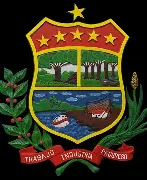
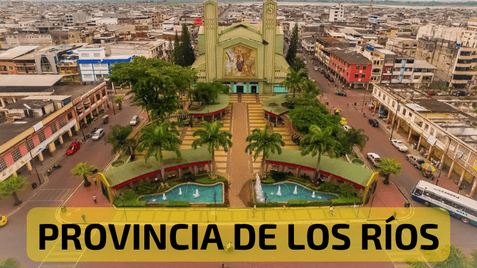

Bienvenidos al portal oficial de información sobre nuestra querida provincia. Aquí podrás conocer a detalle cada aspecto relevante de nuestra región agrícola y comercial.
La provincia de Los Ríos fue creada oficialmente el 6 de octubre de 1860. Su nombre se debe a la enorme red fluvial que la cruza, destacando los ríos Babahoyo y Vinces, vitales para el comercio y el auge histórico del cacao ("la pepa de oro").

La provincia cuenta con 13 cantones llenos de tradición:
• Babahoyo: Capital provincial y centro fluvial.
• Quevedo: Importante motor económico y comercial.
• Vinces: Conocido como "París Chiquito".
• Además de Puebloviejo, Ventanas, Urdaneta, Valencia, Buena Fe, Mocache, Palenque, Quinsaloma, Baba y Caimito.
Destaca por sus malecones, haciendas cacaoteras, balnearios de agua dulce y una exquisita gastronomía tradicional como el sancocho de bocachico y el seco de gallina.
Administrada por el GAD Provincial de Los Ríos junto a la Prefectura y las alcaldías de los 13 cantones, trabajando por el desarrollo vial y productivo.
Noticias y accesos rápidos de la provincia: